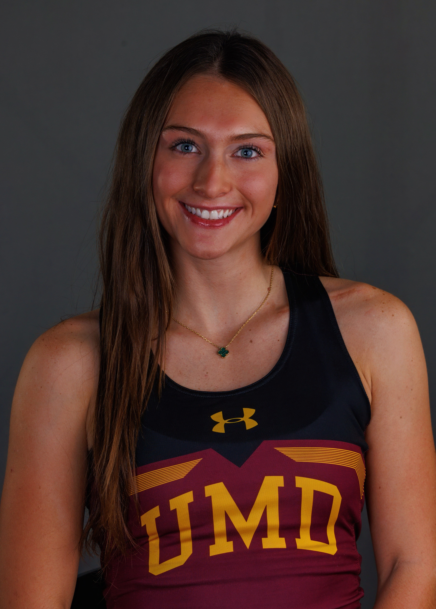
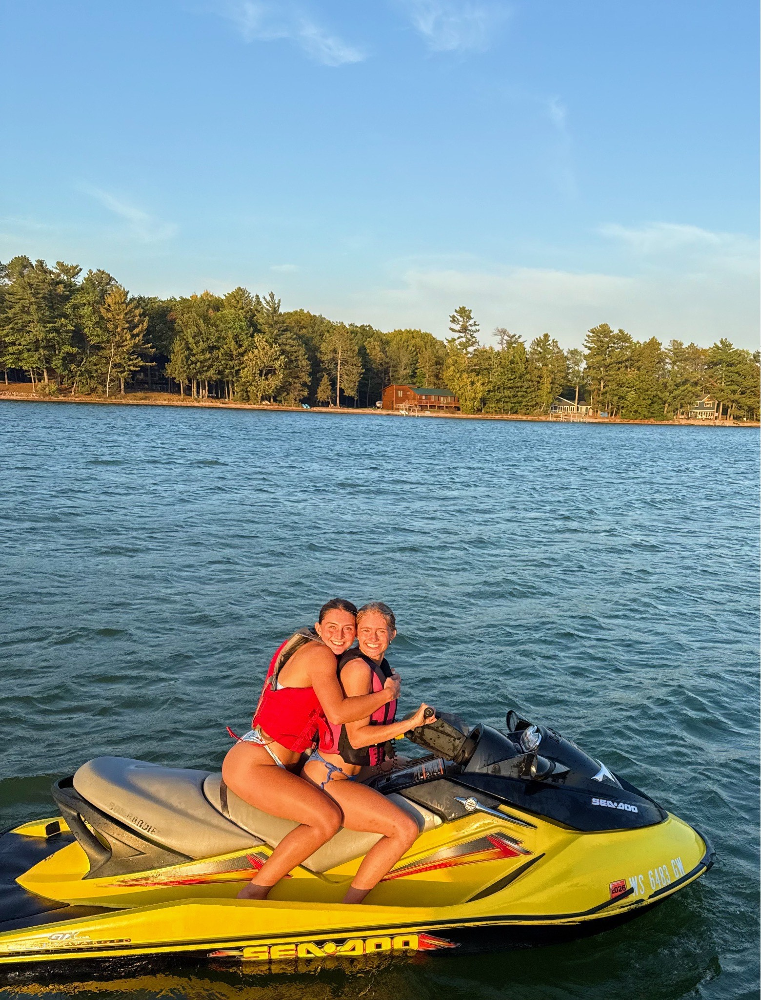
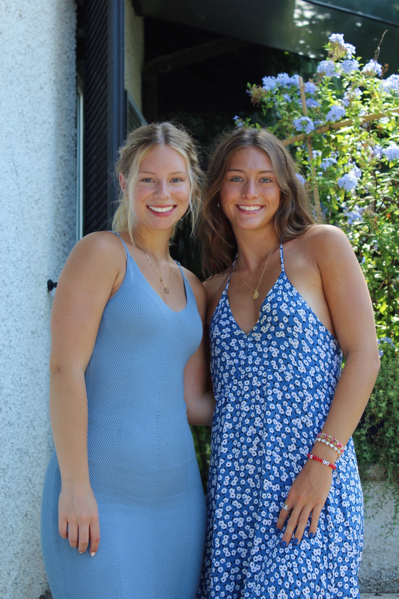

"Matthew 5:14 You are the light of the world. A town built on a hill cannot be hidden."

About Me
I’m Sevanna Burke — a college student and competitive track athlete passionate about strategic design and impactful branding. I combine creativity with a sharp eye for consumer behavior to create work that connects and resonates. I’m currently studying marketing at the University of Minnesota Duluth and exploring opportunities to grow, collaborate, and create meaningful work.

Outdoors
Being outdoors fills me with energy and peace. The sun’s warmth recharges me, whether I’m hiking, biking, or just sitting in nature. It’s my favorite way to reset and feel fully alive. Hobbies
My Welcome Video

Family
Spending time with family reminds me what life is truly about—deep, trusting connections. For me, happiness comes from being surrounded by people I love and sharing real, emotional moments. That’s where I find purpose and peace. Hobbies